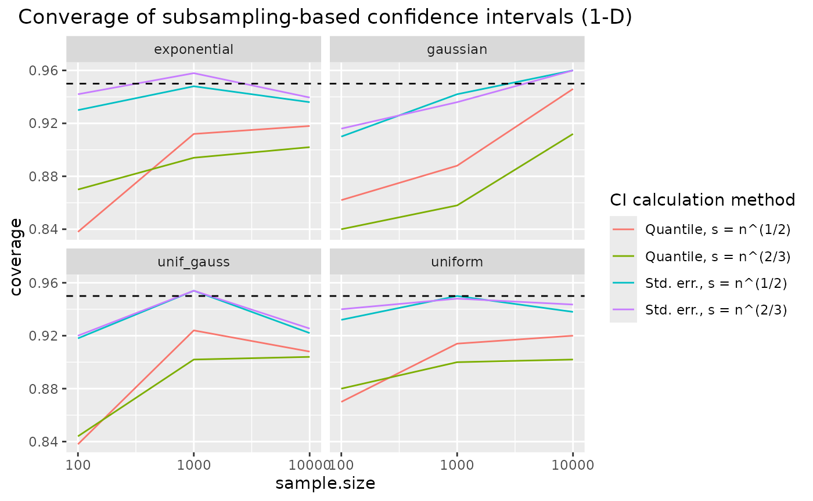

Confidence intervals for KL divergence (1-D)
Source:vignettes/articles/uncertainty-quantification-1d.Rmd
uncertainty-quantification-1d.RmdWe investigate the following pairs of distributions, for which analytical KL divergence values are known:
- vs. ,
- vs. ,
- vs. .
- vs. .
p <- list(
exponential = list(lambda1 = 1, lambda2 = 1/12),
gaussian = list(mu1 = 0, sigma1 = 1, mu2 = 1, sigma2 = 2^2),
uniform = list(a1 = 1, b1 = 2, a2 = 0, b2 = 4),
unif_gauss = list(a = 0, b = 1, mu = 0, sigma2 = 1)
)
distributions <- list(
exponential = list(
samples = function(n, m) {
X <- rexp(n, rate = p$exponential$lambda1)
Y <- rexp(m, rate = p$exponential$lambda2)
list(X = X, Y = Y)
},
kld = do.call(kld_exponential, p$exponential)
),
gaussian = list(
samples = function(n, m) {
X <- rnorm(n, mean = p$gaussian$mu1, sd = sqrt(p$gaussian$sigma1))
Y <- rnorm(m, mean = p$gaussian$mu2, sd = sqrt(p$gaussian$sigma2))
list(X = X, Y = Y)
},
kld = do.call(kld_gaussian, p$gaussian)
),
uniform = list(
samples = function(n, m) {
X <- runif(n, min = p$uniform$a1, max = p$uniform$b1)
Y <- runif(m, min = p$uniform$a2, max = p$uniform$b2)
list(X = X, Y = Y)
},
kld = do.call(kld_uniform, p$uniform)
),
unif_gauss = list(
samples = function(n, m) {
X <- runif(n, min = p$unif_gauss$a, max = p$unif_gauss$b)
Y <- rnorm(m, mean = p$unif_gauss$mu, sd = sqrt(p$unif_gauss$sigma2))
list(X = X, Y = Y)
},
kld = do.call(kld_uniform_gaussian, p$unif_gauss)
)
)Analytical values for Kullback-Leibler divergences in test cases:
vapply(distributions, function(x) x$kld, 1)
#> exponential gaussian uniform unif_gauss
#> 1.5682400 0.4431472 1.3862944 1.0856052Simulation scenarios
For each of the distributions specified above, samples of different sizes are drawn, with several replicates per distribution and sample size.
samplesize <- c(100,1000,10000)
nRep <- 500L
scenarios <- combinations(
distribution = names(distributions),
sample.size = samplesize,
replicate = 1:nRep
)Algorithm & subsampling methods
The plain 1-NN estimator is considered for this example (according to the 1-D estimation benchmark, there is no expected benefit but additional cost for the bias-reduced version).
estimator <- kld_est_nnWe use the following subsampling methods:
subsmethod <- list(
sub_n12_q = function(...) kld_ci_subsampling(...,
subsample.size = function(n) n^(1/2),
method = "quantile"),
sub_n23_q = function(...) kld_ci_subsampling(...,
subsample.size = function(n) n^(2/3),
method = "quantile"),
sub_n12_se = function(...) kld_ci_subsampling(...,
subsample.size = function(n) n^(1/2),
method = "se"),
sub_n23_se = function(...) kld_ci_subsampling(...,
subsample.size = function(n) n^(2/3),
method = "se")
)
subsamplingMethodLabels <- c(
sub_n12_q = "Quantile, s = n^(1/2)",
sub_n23_q = "Quantile, s = n^(2/3)",
sub_n12_se = "Std. err., s = n^(1/2)",
sub_n23_se = "Std. err., s = n^(2/3)"
)
nmethod <- length(subsmethod)Uncertainty quantification of estimators
Calculation of empirical coverage
# allocating results matrices
nscenario <- nrow(scenarios)
covered <- matrix(nrow = nscenario,
ncol = nmethod,
dimnames = list(NULL, names(subsmethod)))
# looping over scenarios
for (i in 1:nscenario) {
dist <- scenarios$distribution[i]
n <- scenarios$sample.size[i]
samples <- distributions[[dist]]$sample(n = n, m = n)
kld <- distributions[[dist]]$kld
X <- samples$X
Y <- samples$Y
# all subsampling methods are evaluated on the same samples
for (j in 1:nmethod) {
kldboot <- subsmethod[[j]](X, Y, estimator = estimator, B = 500L)
covered[i,j] <- kldboot$ci[1] <= kld && kld <= kldboot$ci[2]
}
}Combine scenarios with CI coverage information:
results <- cbind(scenarios, covered) |> melt(measure.vars = names(subsmethod),
value.name = "covered",
variable.name = "subsmethod") Compute coverage per sample size / subsampling method / distribution:
Results: coverage of confidence intervals for KL divergence
ggplot(coverage, aes(x = sample.size, y = coverage, color = subsmethod)) +
facet_wrap("distribution") +
geom_line() +
scale_x_log10() +
geom_hline(yintercept = 0.95, lty = 2) +
scale_color_discrete(name = "CI calculation method",
labels = subsamplingMethodLabels) +
ggtitle("Converage of subsampling-based confidence intervals (1-D)") +
theme(plot.title = element_text(hjust = 0.5))
coverage of the confidence intervals based on nearest neighbour density estimation approaches the nominal coverage of 95% for increasing sample sizes. Coverage is quite robust to the choice of subsample size – which is an argument for using the larger one, , since it leads to smaller confidence intervals. Using a subsampling-based estimate of the KL divergence estimator’s standard error in a normal approximation seems to improve coverage compared to the standard quantile method.
Further notes
The above investigated confidence interval calculation method, namely
subsampling for a nearest neighbour-based KL divergence estimator,
performs best and is recommended. However, other estimators and
confidence interval calculation methods are available in the
kldest package. Some comments on their performance can be
found here.
Confidence intervals for the kernel density-based method
When the kernel density based KL divergence method performs well in the estimation benchmark (such as for Gaussians), confidence intervals also show good coverage properties. However, in cases where the KL divergence estimate shows considerable bias in the estimation benchmark (exponential or uniform distributions), uncertainty quantification also fails. Tailoring the kernel properties (kernel class, bandwidth) to the distribution of interest might allow for improved performance in such cases.
Confidence intervals based on bootstrapping with replacement
Whether to use bootstrapping or subsampling for uncertainty quantification does not play a role for kernel density-based methods – coverage is similar. However, results are dramatically different for nearest neighbour density-based methods, which cannot deal with the ties produced by resampling with replacement.